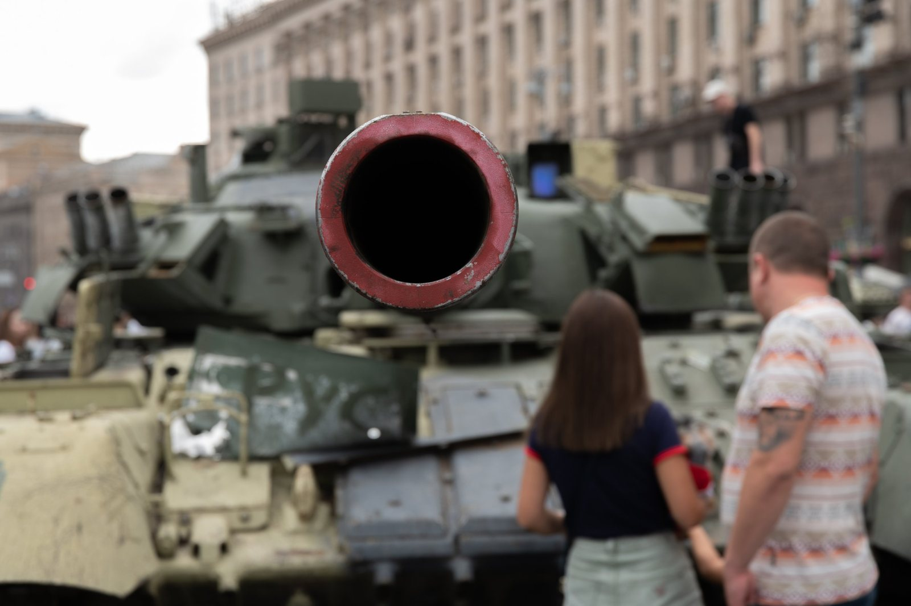
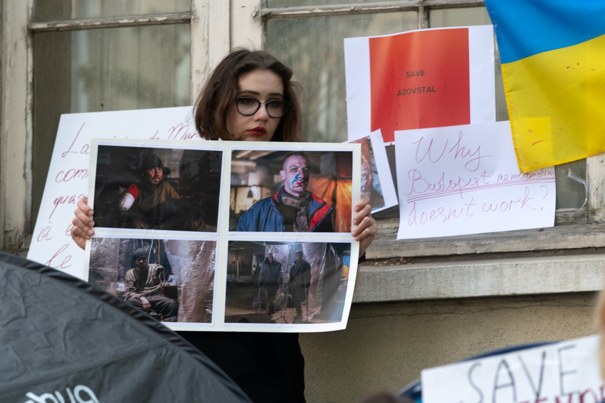
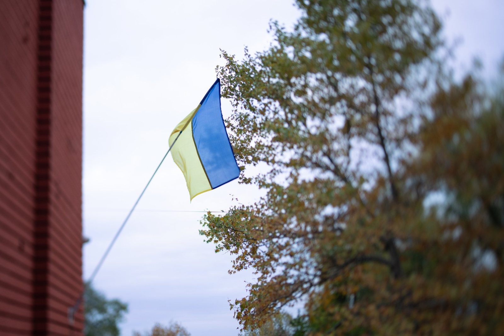
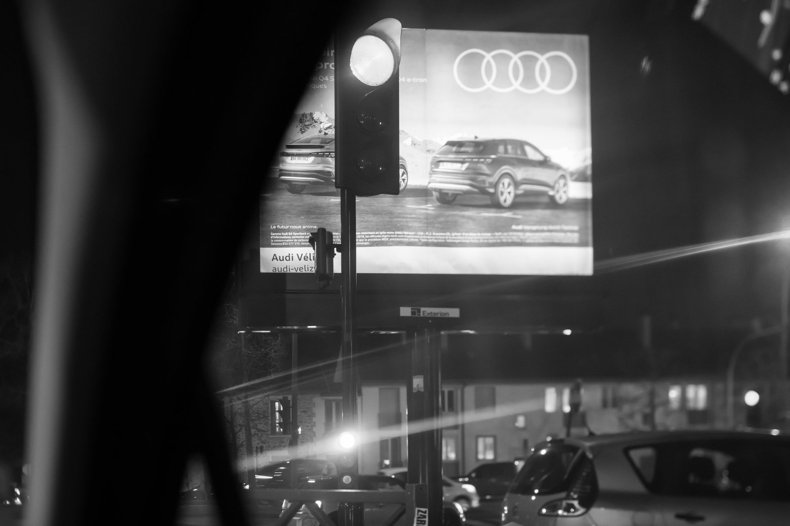

Skip to content
Films
Commercial
Projects
People
About
Contact
Projects
IDP center reportage
Interpipe Steel
Kherson, 2023

visual lexicon of life amongst war
Invasion on our Hearts and Souls
Roadtrip Normandie

#extraction_the_military_of_Mariupol

Dnipro in details
Centre Pompidou
Urban Lines
in between

#incomplete